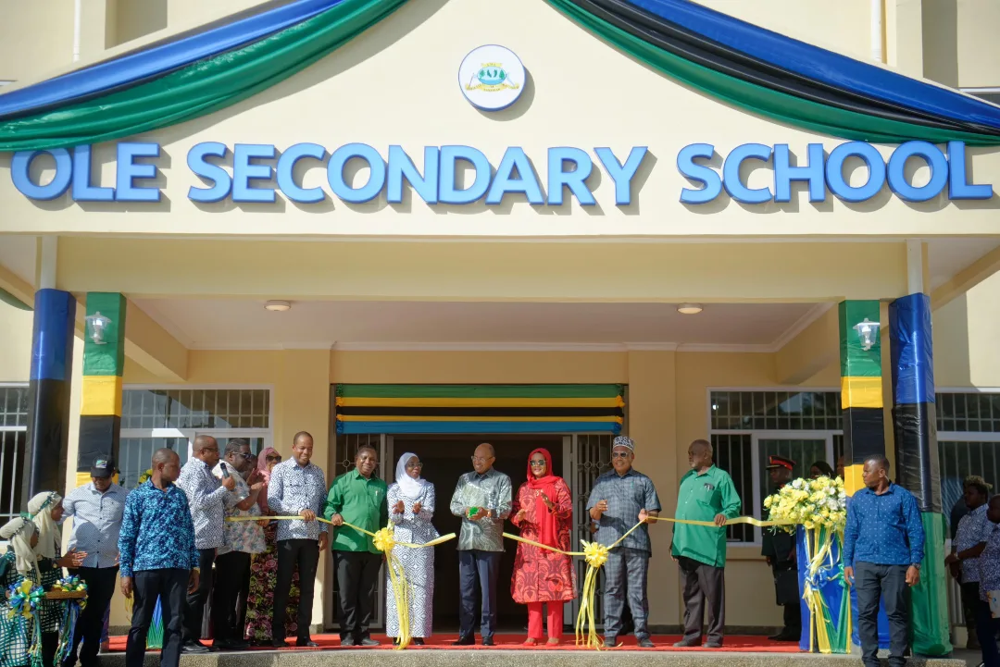
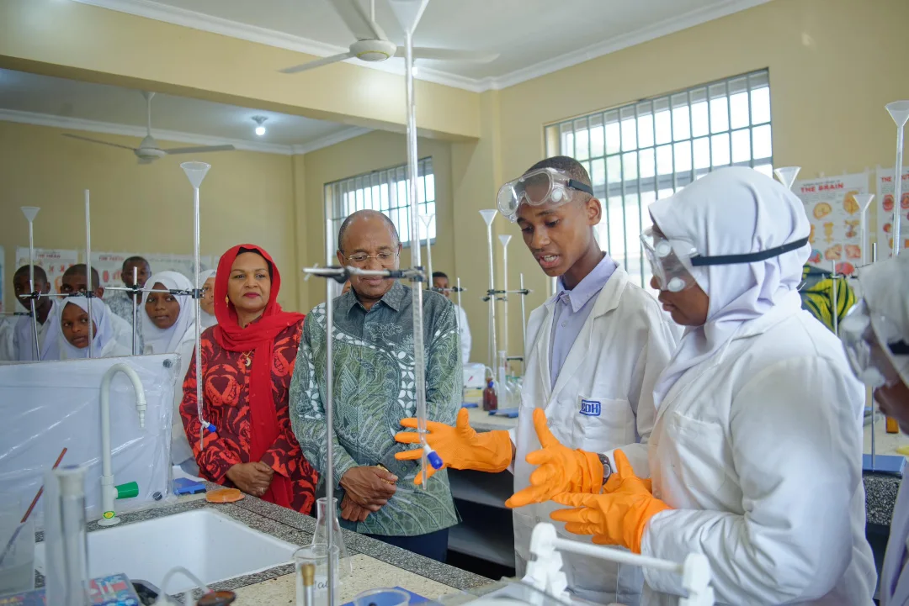
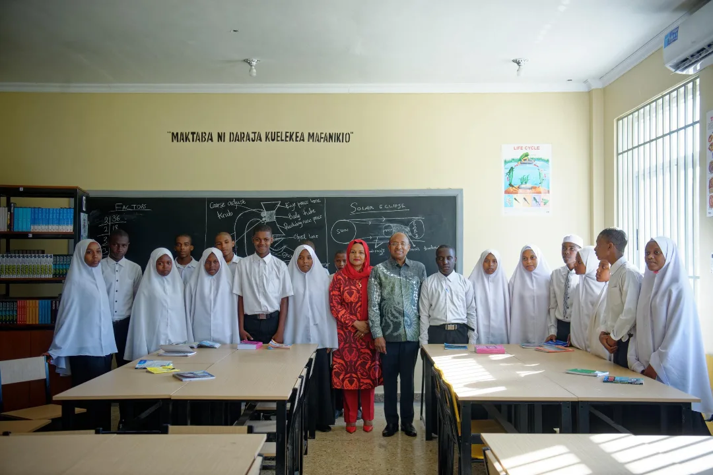
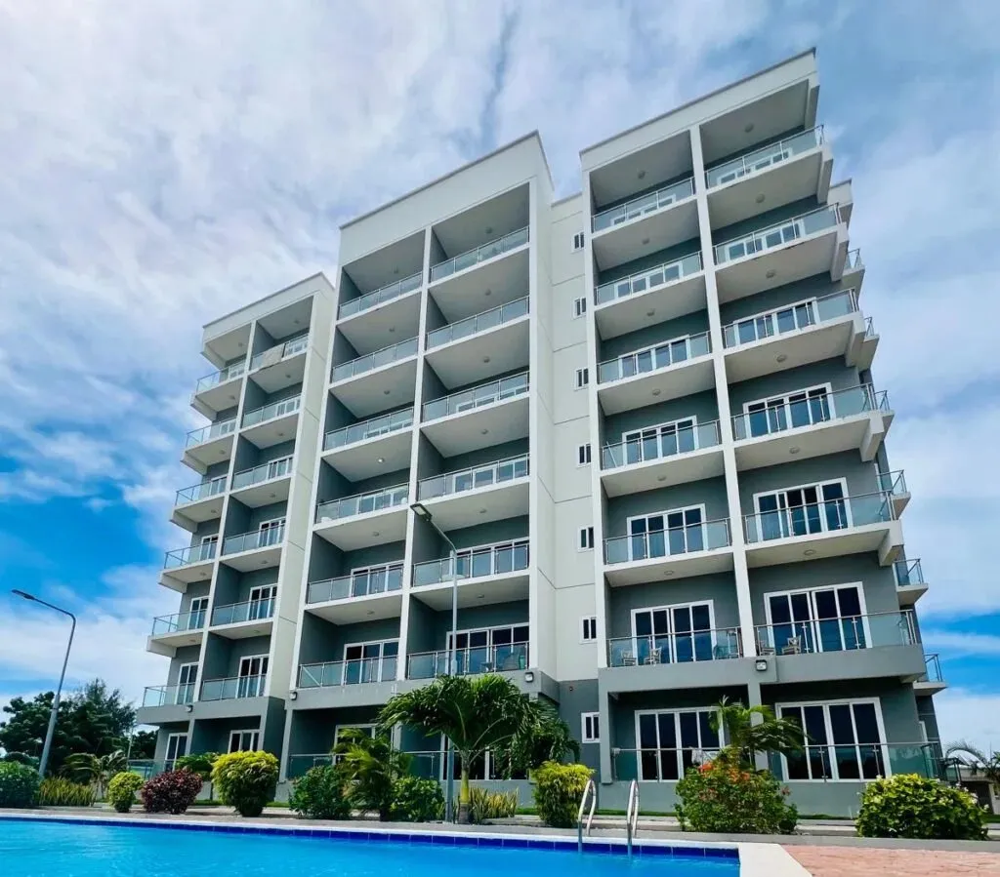

Micheweni, Pemba Island
Micheweni District Hospital
TZS 4.8 billion healthcare facility. 123,379 people served. Pemba Island's most significant government health project.
Case Study — Government Education · Pemba Island · 2024
Benchmark's standout 2024 government education project. A complete secondary school campus delivered to Ministry of Education specification on Pemba Island — opened by the President of Zanzibar at the official inauguration ceremony.
The Challenge
Ole Secondary School is one of Benchmark's most significant government education projects — a full multi-block secondary school campus delivered in 2024 to serve the community of Ole on Pemba Island. For a location with limited contractor access and a demanding Ministry of Education specification, this project required the same discipline and logistics management that Benchmark applies to its largest healthcare and government contracts.
Secondary school construction in Tanzania carries a specification requirement that many regional contractors are not equipped to meet. Structural integrity, classroom acoustic performance, sanitation block design, and the external works — sports grounds, access roads, perimeter boundary — all form part of a Ministry of Education compliance package that must be delivered in full before the school can be handed over to the community.
On Pemba Island, where material supply chains are more constrained and contractor capacity thinner than on Zanzibar's main island, the risk of programme failure is higher. Benchmark's established Pemba operations — developed through the Micheweni District Hospital project — gave us the logistics infrastructure to deliver Ole without the disruption that would have affected an unfamiliar contractor.
The Benchmark Approach
Benchmark approached Ole Secondary School as a programme management challenge as much as a construction one. With multiple building blocks — classrooms, administration, science laboratories, sanitation facilities, and external works — concurrent sequencing was essential to avoid programme compression at the back end of the contract. Every trade was planned in advance and sequenced to allow follow-on works to proceed without obstruction.
The structural frame across the school blocks was built to the same precision standard Benchmark applies on all government contracts. Column setting-out accuracy, slab level tolerance, and blockwork verticality were all controlled and recorded — because a school building is a long-life public asset that communities depend on for decades. Cutting corners on structure to recover programme is never an option Benchmark considers.
External works — including the school compound, access gates, perimeter walling, drainage, and the approach road — were completed in the final programme phase to ensure the school was not just structurally complete but ready to welcome students from day one of handover. ZPPDA-compliant cost reporting was maintained throughout, with interim valuations submitted and approved on schedule.
The Impact
Site Photography





When the President of Zanzibar attends your project's opening ceremony, it confirms the standard of what was built. Ole Secondary School is Benchmark's most visible government education delivery — and proof of what ZPPDA-compliant construction on Pemba Island looks like at its best.
Related Work
Micheweni, Pemba Island
TZS 4.8 billion healthcare facility. 123,379 people served. Pemba Island's most significant government health project.

Zanzibar City
Benchmark's landmark luxury residential development. Premium specification. Daily investor reporting throughout.
Zanzibar & Pemba Island
Browse all fifty completed projects across six construction disciplines.
Ole Secondary School — opened by the President of Zanzibar — demonstrates our government education capability on Pemba Island. Contact us to discuss your requirements.